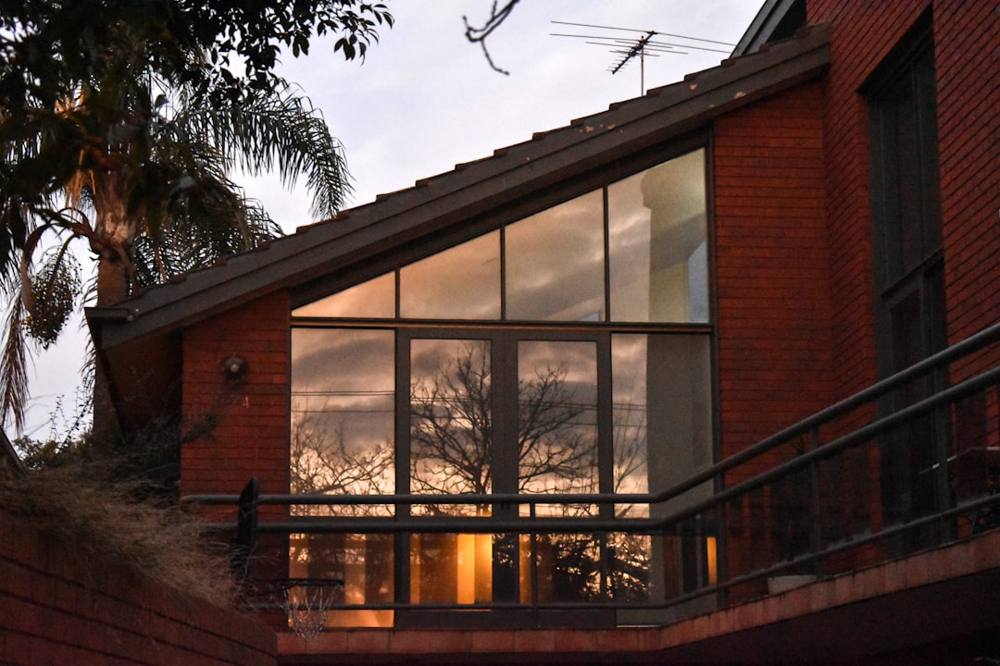

For homeowners comparing bathroom renovations melbourne options, the useful starting point is not tile colour, but the real room problem, the building constraints and the written scope.
Bathroom Renovations Melbourne Explained
Melbourne Bathroom Renovations frames the first conversation around suburb, bathroom type, rough scope and anything unusual about access or approvals. That is useful because a bathroom can look simple on the surface while the job is really about waterproofing, plumbing, electrical scope, strata access, storage, ventilation or tight clearances.
The source page separates projects into complete bathroom renovations, ensuite upgrades and small bathroom remodels. It also names apartments, terraces, premium family homes and compact bathrooms as different settings. Those categories should change the quote conversation. An apartment wet area with owners-corporation friction is not scoped the same way as a family ensuite or a narrow terrace bathroom.
- Complete renovation: use this path when the room is tired, leaking or impractical and demolition, waterproofing, tiling and fit-off may all be involved.
- Ensuite upgrade: focus on layout, storage, ventilation and function in a compact room.
- Small bathroom remodel: test every clearance before choosing fixtures, joinery or door swings.
Cost Signals To Clarify Before Quoting
The published cost guidance gives a broad Melbourne range, so the useful task is narrowing what pushes a project up or down. Size matters, but so do layout changes, fixture quality, finishes and whether licensed plumbing or electrical work is involved. Labour is described as a large share of the total cost, especially when waterproofing, plumbing or electrical scope is part of the job.
Ask for the quote assumptions in writing before comparing totals. A lower figure that leaves exclusions vague can be harder to assess than a higher figure that names demolition, waterproofing, tiling, fit-off, plumbing, electrical work, fixtures and finish quality. For bathroom renovations melbourne planning, the cleanest comparison is a room-by-room scope, not a single headline number.
- What is included in demolition and disposal?
- Will the layout change, or are services staying broadly where they are?
- Which fixtures, tapware, tiles and storage items are allowance items?
- What exclusions could change the final price after work starts?
Apartment, Terrace And Family-Home Differences
Locality is most useful when it explains the building type. The source page specifically contrasts a South Yarra apartment bathroom with owners-corporation friction, a Glen Waverley family ensuite and a Brighton premium full-bathroom rebuild. Those examples show why Melbourne projects should be scoped around access, approval and room use, not just postcode.
Apartment projects may need clearer access notes and approval conversations before work is priced. Terraces and narrow layouts often need space-smart decisions, especially where every clearance matters. Family ensuites usually need storage, ventilation and a layout that works under daily pressure. Premium full-bathroom rebuilds can make finish quality a larger part of the decision.
For another crawlable version of the same topic, see this Melbourne bathroom renovation planning page.
Compliance And Written Scope
Wet-area compliance appears as a central theme in the source material. That does not mean every homeowner needs to understand technical details, but it does mean waterproofing, plumbing and electrical scope should be discussed before visual selections are locked in. The bathroom is a wet area first and a design project second.
A written scope gives both sides a shared reference point. It should set out the renovation scope, exclusions and quote assumptions before commitment. That is especially important where the room involves layout changes, apartment access, compact clearances or linked laundry and powder-room work.
- Confirm whether waterproofing is part of the quoted scope.
- Ask which plumbing and electrical tasks are included.
- Record access constraints, strata or owners-corporation issues before work is priced.
- Keep finish selections connected to practical items such as storage, ventilation and cleaning access.
Who This Applies To
This guide suits homeowners who already know the bathroom needs work but have not yet turned the idea into a quote-ready brief. It is especially relevant for people comparing a full renovation with a smaller layout rethink, or deciding whether an ensuite, compact bathroom, apartment wet area or linked laundry and powder-room project should be scoped separately.
It is less useful for readers seeking a guaranteed price from a short description. The source page itself points to an indicative calculator and a planning checklist, but the factual page text shows that the final quote conversation depends on the room, suburb, access issues, layout changes and finish choices. The right next step is a concise brief that names the bathroom type, current frustration, layout intention and any access or approval complication.
- Define the room. Write down the bathroom type, current frustration and whether the layout is expected to change.
- Record constraints. Note access issues, strata or owners-corporation matters, compact clearances and any linked laundry or powder-room work.
- Set finish expectations. List preferred fixture and finish quality so quote assumptions are easier to compare.
- Ask for written scope. Request inclusions, exclusions and assumptions before treating any price as comparable.
| Path | When it fits | Quote focus |
|---|---|---|
| Complete renovation | A tired, leaking or impractical bathroom needs broad renewal | Demolition, waterproofing, tiling, fit-off and service changes |
| Ensuite upgrade | A compact, dark or dated ensuite needs better function | Storage, ventilation, layout and daily usability |
| Small bathroom remodel | A terrace, apartment or narrow room has tight clearances | Fixture placement, access, storage and space efficiency |
This guide covers quote-ready planning for Melbourne bathroom projects across full renovations, ensuites, small bathrooms and apartment wet areas.